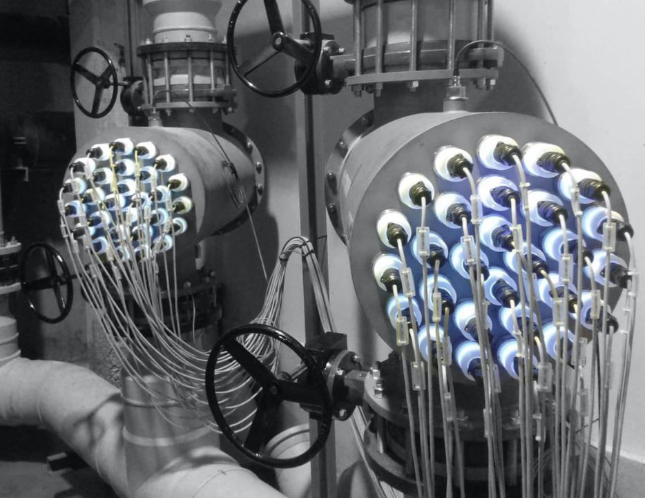
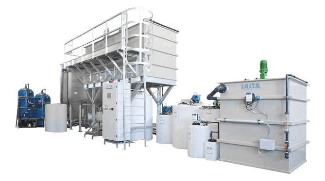
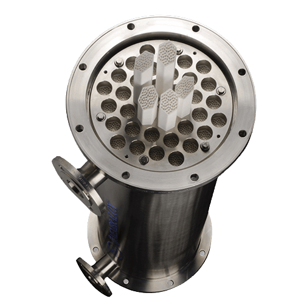
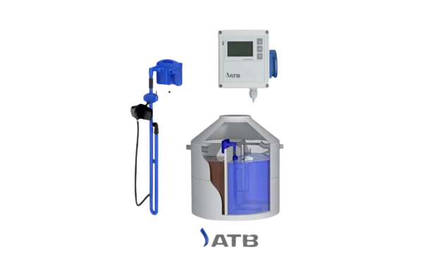
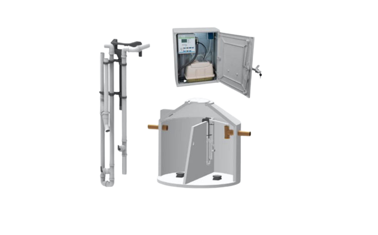
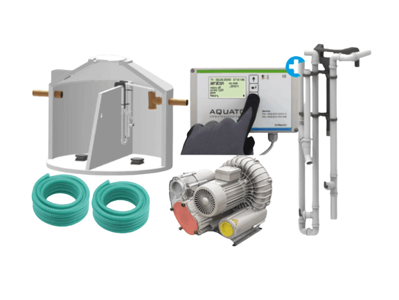

The most innovative and advanced solutions provider in the wastewater treatment industry. Delivering sustainable, cost-effective solutions for domestic and industrial applications.
Comprehensive wastewater treatment technologies for every application
Fully biological sewage treatment plants for domestic wastewater with advanced SSB® technology and proven reliability.
Learn MoreHome grown treatment plants for industrial and non-biological wastewater with customized coagulant and flocculant compositions.
Learn More'Chemical Free' water purification solutions based on AOP technology for micro-organism elimination and water disinfection.
Learn More4th generation ceramic membrane micro filtration solutions that are durable, efficient, and faster than conventional methods.
Learn MoreAquablu Lanka Pvt. Ltd. is a Central Environment Authority (CEA) approved consultancy body for waste management solutions in Sri Lanka. The company is led by a team of dedicated domain specialists with over 25 years of diverse and extensive industry experience.
Our qualified professionals in Microbiology, Chemistry, Engineering, and Information Technology are intimately involved in designing and commissioning solutions that deliver exceptional results.
We partner with Germany's Aquato® and ATB® for sewage treatment plants, Kerasiev® for ceramic membrane filters and h2o.TITANIUM from Spain for AOP systems - industry experts and leaders in their respective technologies.
Meet Our Leadership

For industrial effluents with greater concentrations of non-biodegradable contaminants, we developed solutions based on physio-chemical principles.
Different coagulant and flocculant compositions are used in the process, with batch and continuous treatment processes created to fulfill regulatory requirements and client preferences.
A chemical-free water purification & disinfection solution which eliminates micro-organisms, reduces turbidity and odor without generating waste or by-products in the wastewater.

4th generation ceramic membrane micro filtration solutions are durable, efficient, and faster than existing polymer membrane or conventional filtration processes.
Our sewage treatment products (STP) are adaptable and simple to install, for new construction or as a retrofit to existing systems. The customizable solutions can be tailored to fit into tight locations, require minimal monitoring & maintenance, and are cost-effective.

The best-selling SBR small sewage treatment plant from ATB Puroo® for single-family houses and mini buildings with capacity up to 1,000 liters per day.
ATB PUROO® Brochure
AQUATO® STABI-S and STABI-KOM with advanced SSB® technology designed for capacity up to 1,000 - 75,000 liters per day.
STABI-KOM Brochure
The STABI-KOM and ORKA models from AQUATO® are designed for industrial and commercial use with maximum capacity of 2000PE, modular for expansion.
ORKA BrochureView images and videos of some of our successful wastewater treatment installations across Sri Lanka. See our innovative solutions in action and the quality of our work.
View Complete GalleryReady to discuss your wastewater treatment needs? Contact our experts today.
121/B1/1 Chilaw Road
Negombo, Sri Lanka